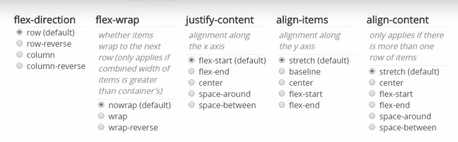

Regla 1: Flexbox necesita 1 padre y al menos 1 hijo.
- El padre es un flex container. display: flex;
- El hijo es flex item.
Regla 2: Flexbox container tiene 2 ejes (x, y).
- El flex container lleva la propiedad:
- flex-direction: row; // Horizontal por default
- flex-direction: column;// Vertical
- flex-direction: column-reverse;// Vertical 3-2-1
- flex-direction: row-reverse;// Horizontal 3-2-1
Regla 3: Se puede permitir el salto de columnas con flex-wrap.
- flex-wrap: nowrap; // por default
- flex-wrap: wrap; // Salta a la siguiente fila
- flex-wrap: wrap-reverse; // Salta al revés 3-2-1
Regla 4: Alinear elementos en el eje elegido como principal con justify-content.
- justify-content: flex-start; // por default
- justify-content: flex-end; // al final
- justify-content: center; // Centrado
- justify-content: space-around;
- justify-content: space-between; // distribución proporcional
Regla 5: Alinear elementos en el eje secundario con align-item.
- align-item: stretch; // por default
- align-item: baseline; //
- align-item: center; // Centrado
- align-item: flex-start; //
- align-item: flex-end; //
Regla 6: Alinear los flex items individualmente en el eje secundario con align-self (sobreescribe).
- align-self: stretch; // por default
- align-self: baseline; //
- align-self: center; // Centrado
- align-self: flex-start; //
- align-self: flex-end; //
Regla 7: Los flex items ignoran propiedades de CSS como:
- float
- clear
- vertical-align
Regla 8: Cambiar el tamaño de los flex items:
- flex-grow
- flex-shrink
- flex-basis

Hijo 1 (flex item)
Caja 2 (flex item)
Caja 3 (flex item)